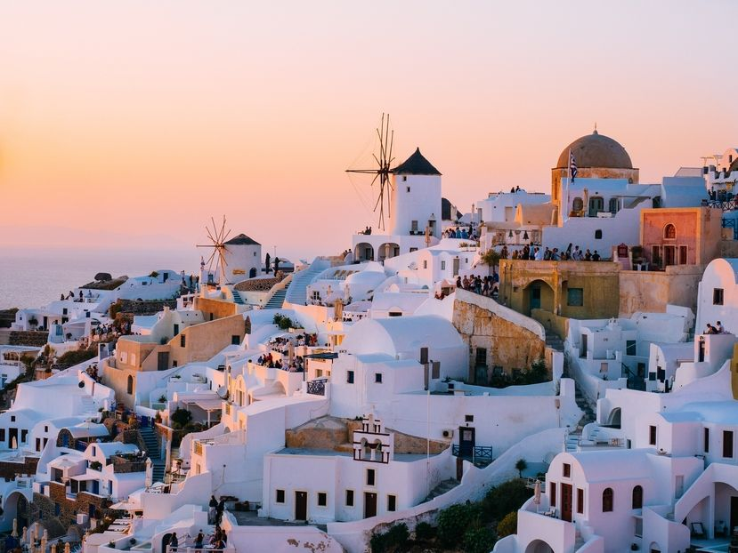

Santorini
Welcome to Paradise

Santorini at noon
Welcome to Paradise
Santorini at noon
Santorini is an island in the southern Aegean Sea, about 200 km (120 mi) southeast from the Greek mainland. It is the largest island of a small, circular archipelago, which bears the same name and is the remnant of a volcanic caldera. It forms the southernmost member of the Cyclades group of islands, with an area of approximately 73 km2 (28 sq mi) and a 2011 census population of 15,550. The municipality of Santorini includes the inhabited islands of Santorini and Therasia, as well as the uninhabited islands of Nea Kameni, Palaia Kameni, Aspronisi and Christiana. The total land area is 90.623 km2 (34.990 sq mi). Santorini is part of the Thira (Greece) regional unit.
The island was the site of one of the largest volcanic eruptions in recorded history: the Minoan eruption (sometimes called the Thera eruption), which occurred about 3,600 years ago at the height of the Minoan civilization. The eruption left a large caldera surrounded by volcanic ash deposits hundreds of metres deep. It may have led indirectly to the collapse of the Minoan civilization on the island of Crete, 110 km (68 mi) to the south, through a gigantic tsunami. Another popular theory holds that the Thera eruption is the source of the legend of Atlantis.